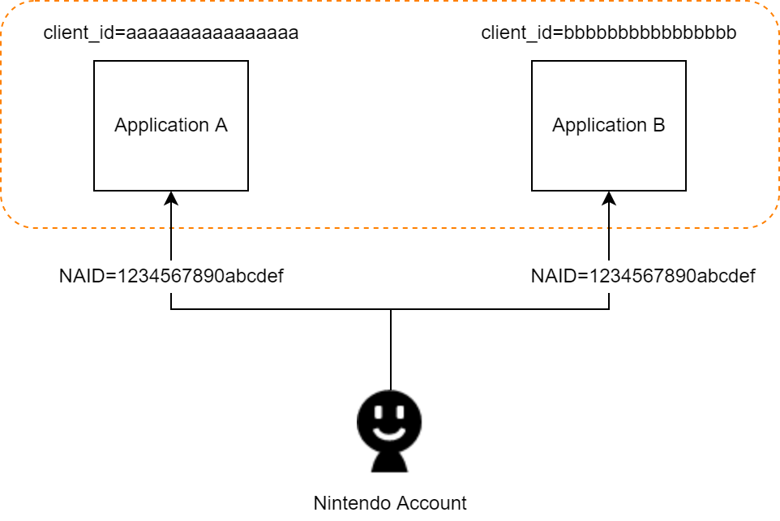
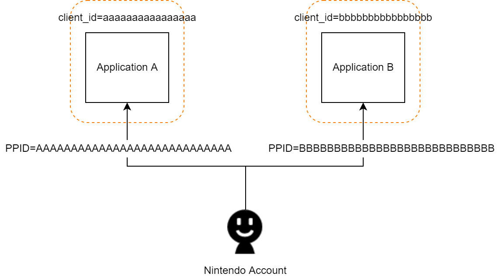
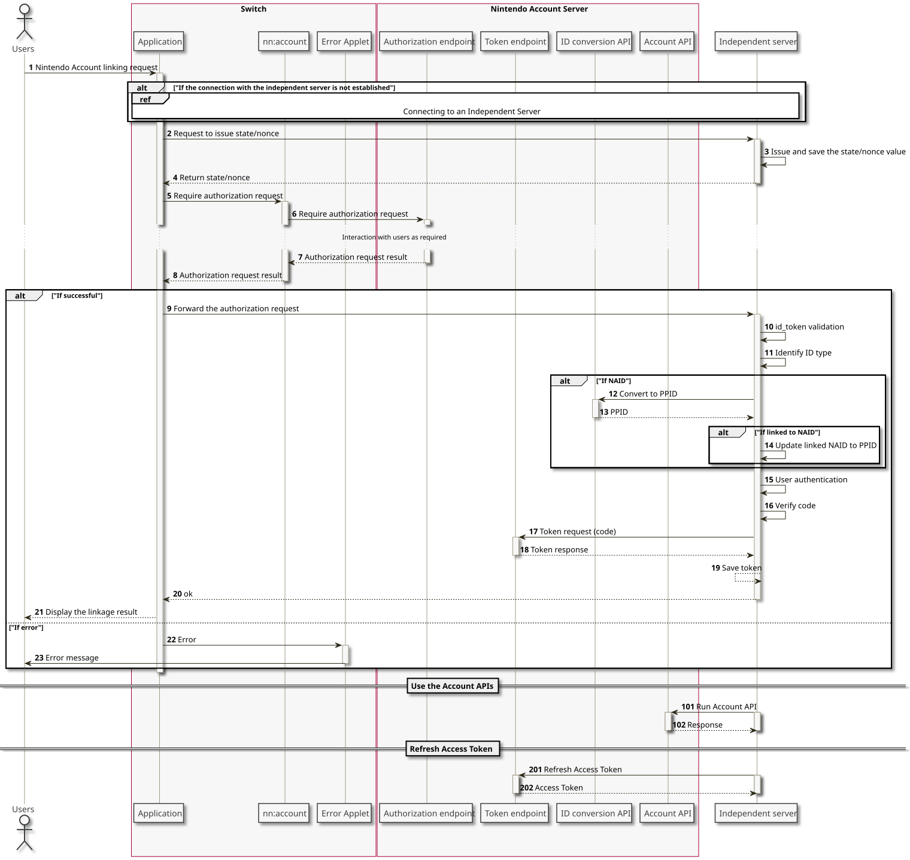
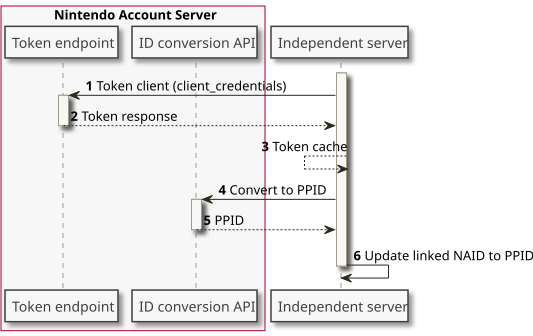

The period for migrating from NAID to PPID has ended. You no longer need to perform the migration process described on this page for independent servers that use the Nintendo Account linking feature.
About PPID
PPID (Pairwise Pseudonymous ID) is an ID that identifies Nintendo Accounts and is different for each client ID. Previously, the Nintendo Account ID (NAID) provided through the Nintendo Account linking feature was a value shared across client IDs, but the PPID now has a different value for each client ID. If an NAID is already linked, you must complete the following procedure to replace it with a PPID.
| ID Name | Description | Concept Diagram |
|---|---|---|
|
NAID (Nintendo Account ID)
|
An ID that identifies the Nintendo Account and is shared by all clients. The format is 16 alphanumeric characters, with lowercase letters. |
 |
|
PPID (Pairwise Pseudonymous ID) |
An ID that identifies the Nintendo Account and is different for each client ID. The format is 28 alphanumeric characters, with uppercase letters. If the NAID and client ID combination is the same, the PPID is always constant. The actions of canceling authorization and of reconsenting do not change the PPID. |
 |
Migration Procedure
For independent servers that link Nintendo Accounts, you can use the following methods to convert NAIDs to PPIDs during this migration period.
- Convert NAIDs to PPIDs in response to Nintendo Account linking requests from users.
- Convert NAIDs to PPIDs in a batch process on the independent server.
When the NAID is converted to a PPID, switch the user identifier associated with the independent server from NAID to PPID.
After the migration period ends, it will no longer be possible to get NAIDs. If the switching from NAIDs to PPIDs is not completed during the migration period, the behavior of the independent server might not be as expected.
Convert NAIDs to PPIDs in Response to Nintendo Account Linking Requests From Users
When the independent server handles Nintendo Account identifiers in response to Nintendo Account linking requests from users, determine the type of the identifier and convert it to a PPID if it is an NAID before processing the request. By implementing this process on the independent server, linking Nintendo Accounts can continue without stopping service even after the migration period has ended and the ID type that can be obtained has changed from NAID to PPID. The specific procedure is as follows.

| Number | Description |
|---|---|
| 1-9 |
The same as the 4.5 Authentication and Authorization Sequence. |
| 10 |
Verify the ID token. For more information about the verification method, see the 4.7.3 ID Tokens page. |
| 11 |
Determine whether the |
| 12-14 |
When the Info The migration period has ended, so this process is no longer performed. The |
| 15 |
Use the PPID to log in to (or perform linking processing for) the independent server.
|
| 16- |
The subsequent processing is unchanged from the 4.5 Authentication and Authorization Sequence. Info
You can also use the
|
Convert NAIDs to PPIDs in a Batch Process on the Independent Server
When the previously described method to convert NAIDs to PPIDs in response to user requests for Nintendo Account linking is implemented on the independent server, IDs will be converted from NAIDs to PPIDs for users of the application one by one. However, users who do not use the application need to have their IDs converted using separate batch processing. This section describes the process for converting IDs via batch processing.

| Number | Description | ||||||||||||||||
|---|---|---|---|---|---|---|---|---|---|---|---|---|---|---|---|---|---|
| 1-3 |
Get an access token by making a 4.7.2 Token Requests to the Nintendo Account server with the following request parameters. Request Parameters
If the token request is successful, a token with the following properties is obtained.
Cache and use the obtained access token while it is valid. |
||||||||||||||||
| 4-6 |
Specify the NAID that is linked to the independent server account and call the 4.7.6 ID Conversion API. Then update the NAID linked to the independent server account to the PPID. |
CONFIDENTIAL